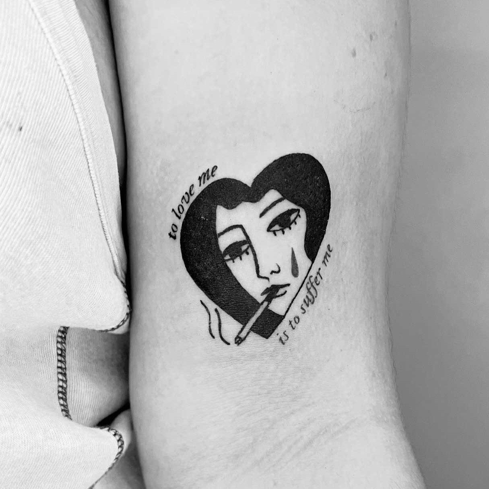
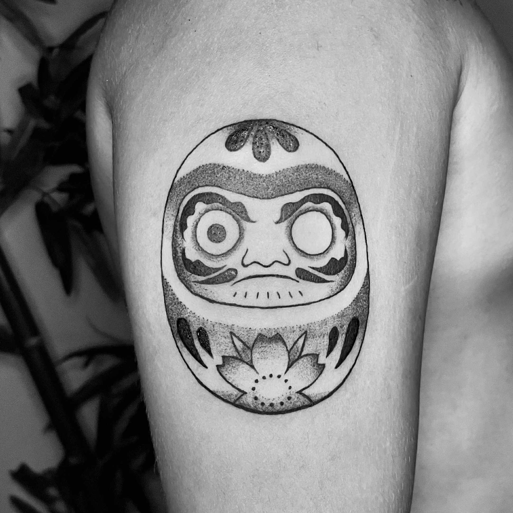
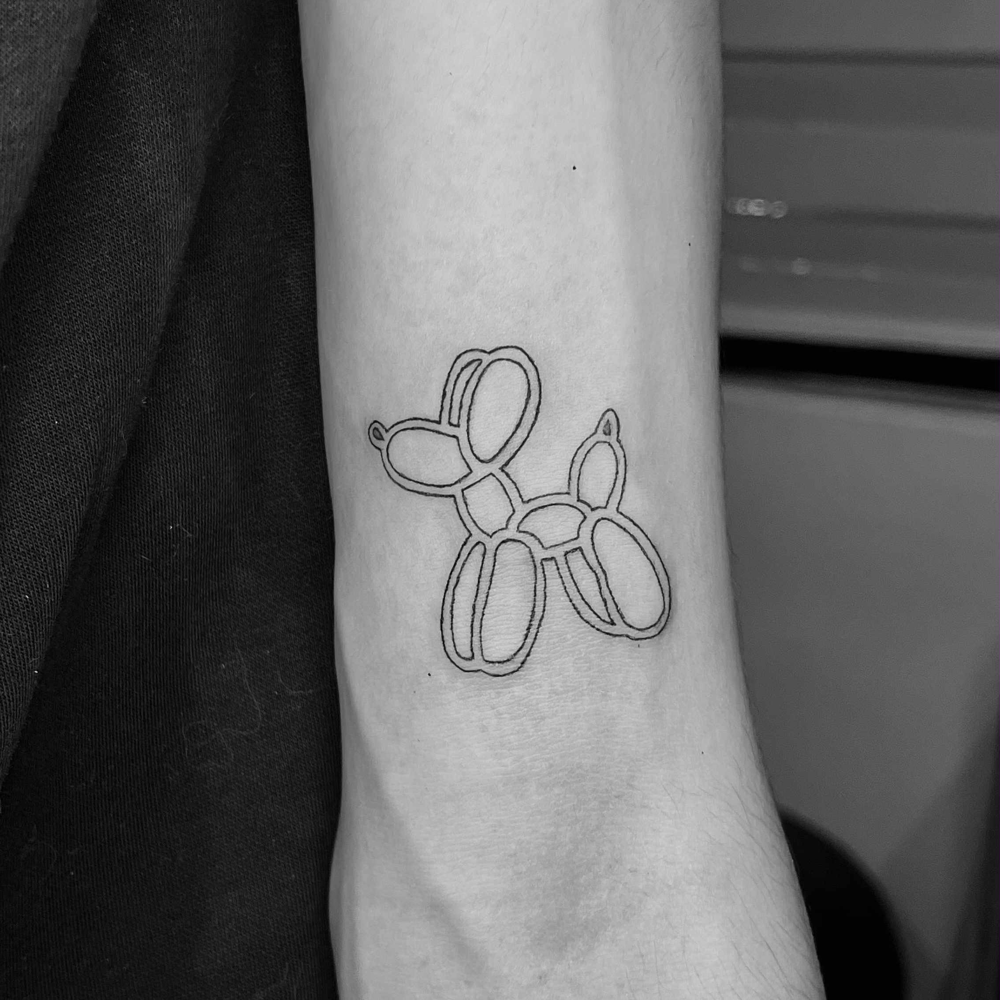
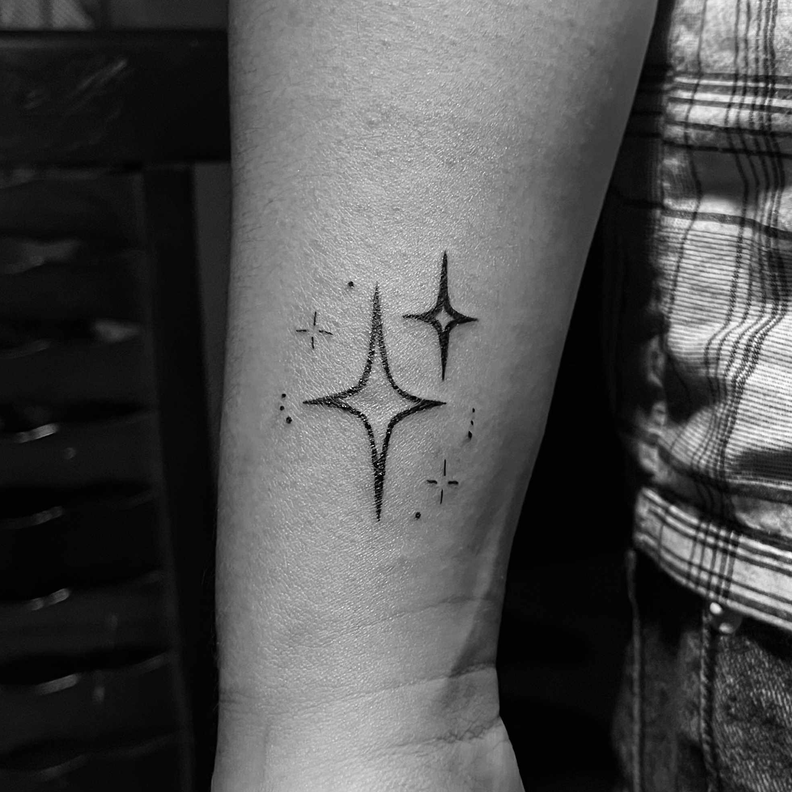
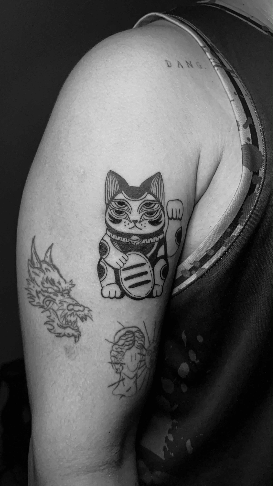
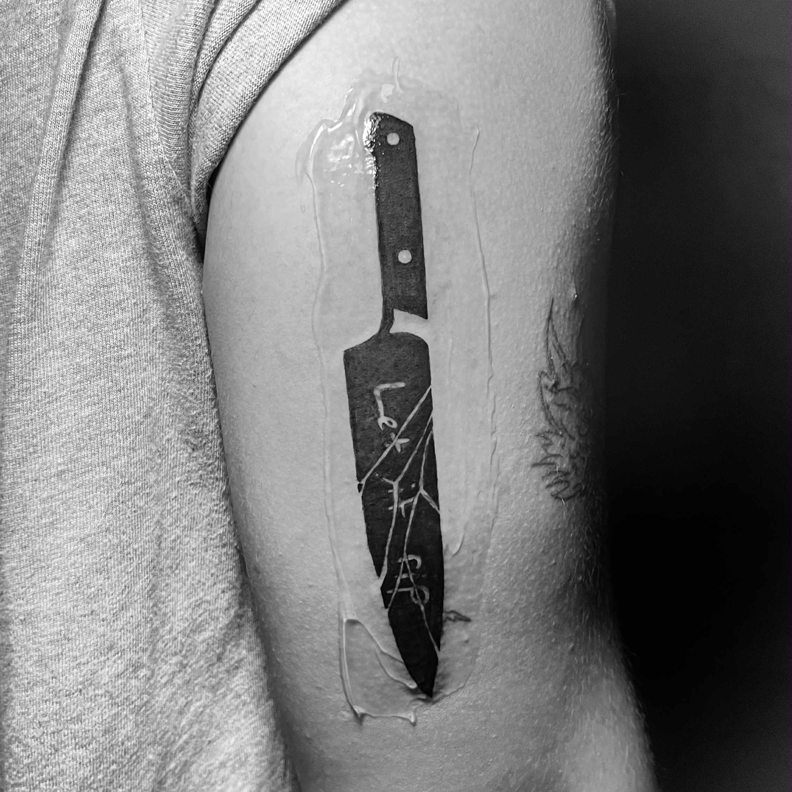
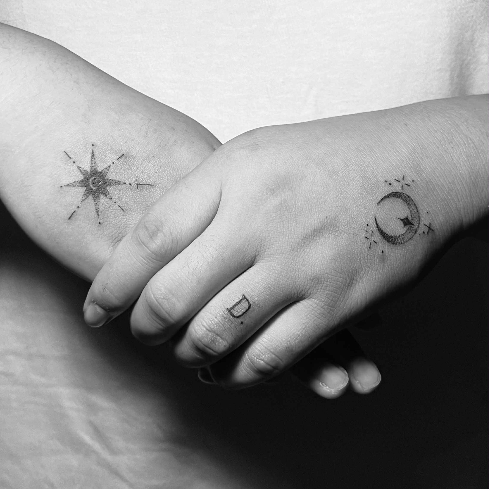
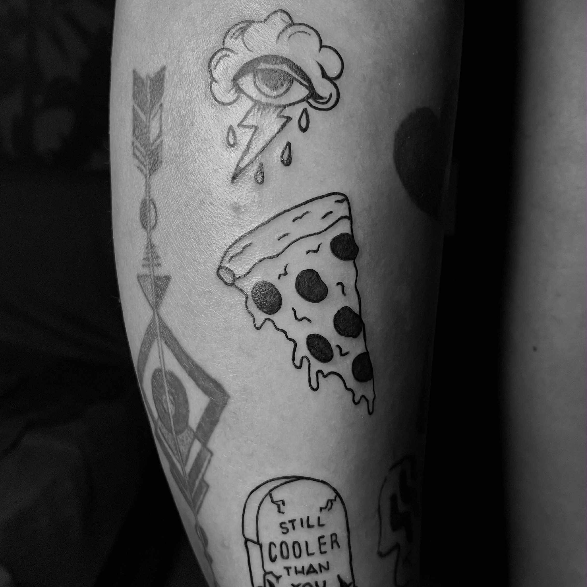
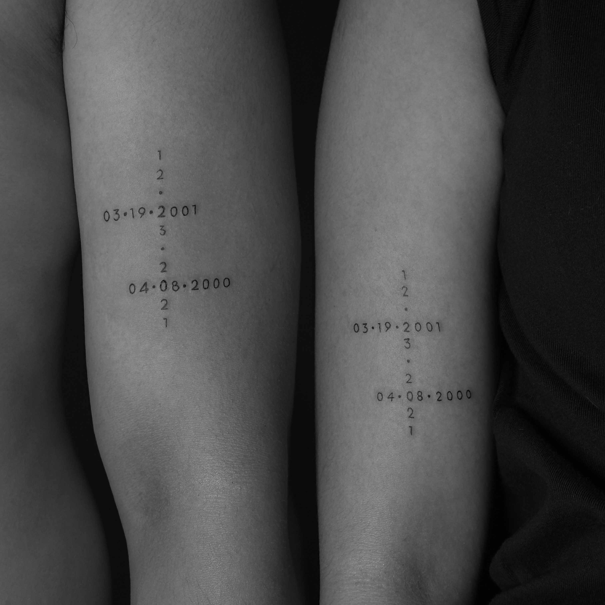

Nostalgia
刺青とノスタルジア
Inkstetik.
“with a delicate hand and a heart full of artistry, i have the privilege of adorning skin with lasting designs...”
01. 哲学
Where Ink meets
Aesthetic
Inkstetik, a combination of "ink" and "aesthetic," encapsulates our idea: to elevate tattooing beyond mere ink and skin, transforming it into a form of self-expression that resonates with both artistic beauty and personal meaning.
We are dedicated to create an experience that is as transformative and meaningful as the art we create, understanding the great influence it can have on people.
「どこか懐かしい、夢のような時間。」
アーティスト Meet the Artist
Hi, I'm Gael! a female tattoo artist of inkstetik with a passion for distinct illustrative, surreal aesthetics, sketchy lines, and minimalist tattoo. my goal is to create meaningful and lasting artwork that empowers you and serves as a constant source of inspiration.
When I'm not tattooing, you can find me drawing in the corner of my room while listening to music, exploring new coffee shops, sometimes singing or playing a guitar, and fangirling on seventeen especially about minwon—hello carats!
And I have a very relaxed and easy-going personality, which I find really helps clients feel comfortable and at ease, especially if it's their first tattoo. I believe in creating a judgment-free and welcoming environment.
"your ideas, my ink: let's make something unique at inkstetik."
Based in: Manila City • Appointment availability: Mon - Sat
Boji — The Burog
The chief distraction of Gael, specializes in ignoring doorbells and precision napping.
Collections Showcase
Explore designs from our exclusive collections: Paper Thoughts and Coraline.
Selected Works
9 Fragments of Memory

Work 01
一
Work 02
二
Work 03
三
Work 04
四
Work 05
五
Work 06
六
Work 07
七
Work 08
八
Work 09
九予約と相談
We are currently taking inquiries for new visions.
Let us craft a permanent memory together in our quiet space.
※ Google Forms will open in a new tab